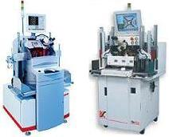
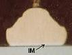

Wirebonding
Theory
As mentioned
in the main page about wirebonding, bonding is achieved by interaction of these factors: ultrasonic
force, pressure, temperature, and time.
Metallurgical
bonding
or cold welding is initiated between the wire and the bond pad by
placing these two metals under
intimate
contact with each other. In the case of gold ball bonding, for
instance, the free-air ball at the end of the wire is brought into
contact with the aluminum bond pad by a needle-like tool known as a
capillary, squashing the ball against the bond pad.
Ultrasonic
energy is then applied by the bonding tool to the bond which, in effect,
scrubs
the bond against the bond pad. This scrubbing action cleans the
bond pad of debris and oxides, exposing a fresh surface of the bond pad
in the process.
|

Fig 5.
Two examples of wirebonders |
The
metallurgical bond or weld between the bond and the bond pad is further
enhanced with the continued application of ultrasonic energy, resulting
in
plastic
deformation
of the bond and bond pad against each other. Aside from the
physical contact and deformation of the metals unto each other,
interdiffusion of the bond
and bond pad metal atoms also occurs to further enhance the cold weld.
The process of bond and bond pad metal counterdiffusion
to form intermetallic bonds is known as
intermetallic formation (Fig.
6).
The area of intermetallic formation between the bond and the bond pad is
known as
intermetallic coverage (IMC). In general, bond
reliability increases with the IMC, as long as overbonding does not take
place. Many companies monitor the IMC as a means of detecting
bonding problems on the line. Good bonds generally exhibit IMC's
> 50%
of the ball impression's area.
The most
common reason for insufficient intermetallic formation aside from
incorrect
parameter settings
is the presence of
foreign
materials
or
contaminants
on the surface of the bond pad. Frequently-encountered bond pad
contaminants include unetched glass, silicon saw dust, and process
residues. Fig.
7 shows a photo of a bond pad with unetched glass on the surface, which
resulted in less than 30% IMC and subsequent ball bond lifting.
|
 |
 |
|
Fig 6.
Cross-section photo of a gold ball bond's intermetallics |
Fig 7. Photo
of a bond pad with a lifted ball caused by insufficient IMC (<30%) |
If the bond
and bond pad are composed of different metals, such as in the case of
gold ball/aluminum bond pad bonding,
thermal
energy is
required to 'soften' the harder metal (aluminum) to match their
hardness. Au-Al ball bonding generally takes place at 200-240 deg C. In
cases where the wire and bond pad have similar metallurgies, bonding may
occur at ambient temperature, such as in the case of aluminum
wedge/aluminum bond pad bonding.
Pressure
is applied to the bonding tool to keep it in control as it scrubs the
bond against the bond pad. Without pressure, the bonding tool
would bounce around the bond pad as it receives and transmits the
ultrasonic energy.
The quality of a bond may be
assessed using bond strength
tests.
See
also:
Effects of Grain Size Distribution on
Wire Bonding
<Back to Wirebonding>
<Proceed to
Bonding Failures>
Front-End Assembly
Links:
Wafer Backgrind;
Die Preparation;
Die Attach;
Wirebonding;
Die Overcoat
Back-End Assembly
Links:
Molding;
Sealing;
Marking;
DTFS;
Leadfinish
See Also:
Wirebond Metallurgies;
Bonding Failures; Bonding
Wires; Bonding
Tools;
Bond
Strength Tests; Bond
Lifting;
IC
Manufacturing; Assembly Equipment
HOME
Copyright
©
2001-2006
www.EESemi.com.
All Rights Reserved.